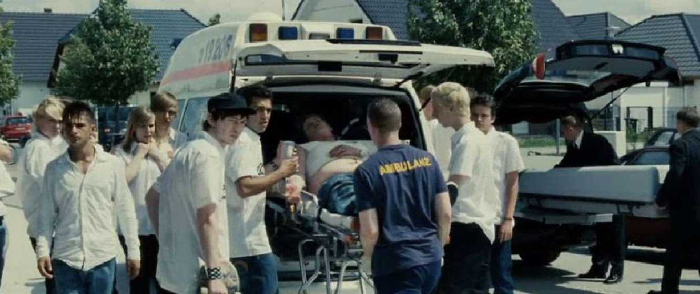
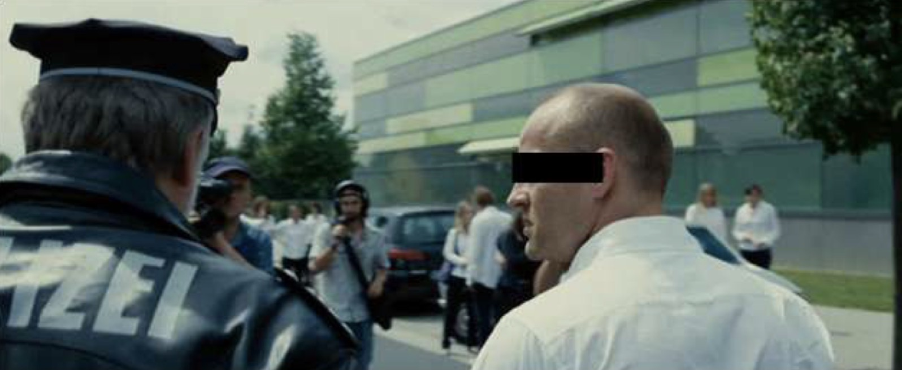

Montag den 2. November
Selbstmord an Marie-Curie Gymnasium
Heute Nachmittag haben Zeugen Schüsse aus der Aula des
Marie-Curie Gymnasiums gehört und die Polizei und einen
Krankenwagen herbei gerufen.
Anscheinend hat ein Schüler eine Schusswaffe mit zum
Unterricht genommen und hat erst einen Mitschüler schwer
verletzt und danach sich selbst getötet.
Der Grund ist bislang noch ungeklärt.
Ein paar Minuten später, wurde ein Lehrer namens Rainer
Wenger von der Polizei heraus eskortiert.
Laut Zeugen ist er für das Ganze verantwortlich.
Die meisten Schüler und Schülerinnen befinden sich in einem
Schweren Schockzustand und sind sehr verstört.

Ein Schüler stirbt nach Selbstmord (im Leichenwagen)
